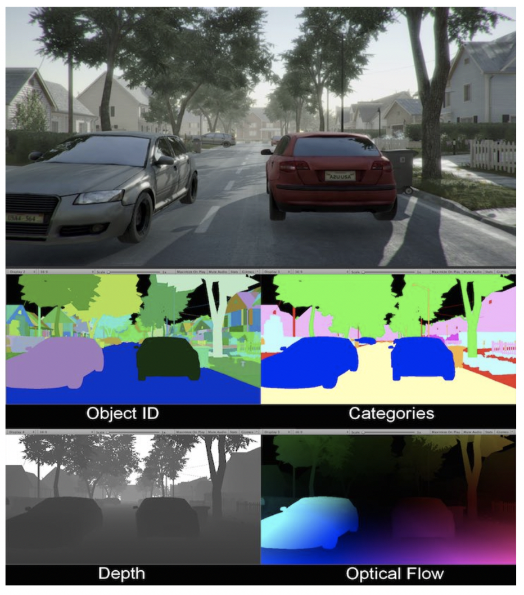

For this project a neural network was trained on a synthetic dataset rendered using 3D game engine software. Neural networks require a large amount of high-quality labelled data. Without the infrastructure and the data collection methods of large technology companies it can be difficult to source a large enough dataset to train a neural network effectively. Therefore, synthetic datasets are a powerful tool to disrupt this disadvantage. Training using a synthetic data set allows for endless possibilities and the ability to selectively refine the final creative output. My initial inspiration for this project was to be able to create pieces of art based on optical illusion art such as below.
To achieve these outputs and apply optical art patterns to a variety of input images would require a technique in machine learning called image-to-image translation. Pix2pix was utilised as the implementation of image-to-image translation using a conditional adversarial network called CycleGAN (cGAN). Pix2Pix works by training the neural network on a set of related input-output image pairs to generate the target output from the input (Isola et al., 2016). The aim was to train a neural network on image pairs of patterned 3D objects rendered using a game engine (target output) and a depth map of the rendered image as the translation layer (or input). A depth map is a grayscale image that contains information about the distance between the surface of objects from a given perspective. It is hoped that the network will be able to take input depth maps of any image or model and output an image with the pattern applied to create the optical effect above.
The generation of synthetic data was achieved using an open source package by Unity Game Engine, called ‘Image Synthesis for Machine Learning’ which was modified to suit the purposes of this project (Unity Technologies, n.d.). It is a sample project that can be used to build a synthetic image generator using the Unity camera to render images at runtime (Rodriguez, 2019). This tool is capable of rapidly generating large datasets of rendered images of 3D scenes as well as accompanying image depth (depth maps), segmentation maps (categorisation), optical flow (motion) and more as shown below.
This tool allows rapid and efficient generation of image pairs to use with models such as Pix2Pix.
As shown in Figure 3 above randomised deformations were applied to a mesh to achieve variability in the depth maps. The images were all at 256x256 resolution and both the pattern and perspective were kept consistent. The only variability in the dataset was the changing depth information. Balancing consistency and variability in a dataset is important for the output. Consistency makes the dataset generate more accurate outputs, however variability is important for generalisability of inputs. In this project the final neural network model was trained on 10,000 image pairs of patterned 3D objects (target output) and a depth map of the rendered image as the translation layer (or input).
Two models were trained on 10,000 images: a locally trained model that ran for 8 epochs and a remotely trained model that ran for 200 epochs. Although there are minor differences in the trained models at 8 and 200 epochs (Figure 4), the validation tests show that increased training led to a loss in the model’s ability to generalise from input compared to the model trained for 8 epochs (Figure 5). This is likely due to the 200 epoch model memorising the data and being over-fit. All subsequent outputs were generated using the model trained for 8 epochs.
The generator network learnt depth information in the form of depth maps and was able to output images of 3D models with a pattern applied as a 3D effect when provided with a depth map of the model. The final model was trained on images where surfaces closer to the near clipping/focal plane (the camera in Unity) are darker and surfaces further away are lighter. It is also possible to have depth maps with the opposite configuration (lighter surfaces at the near clipping plane and darker surfaces further away) as highlighted in Figure 4 below. These results highlight that running the model on images using the opposite depth maps can yield unique results where the nearer surfaces have an inverted 3D illusion effect applied.
The final model was run on depth maps of models of a human hand and head in different orientations. The resulting outputs images were stitched together to create the animations seen below.
The final results are encouraging as the illusion has been applied seamlessly between the object and background as in the optical art. Since the mesh deformations are quite large in area it may be difficult for the network to discern dense detail in depth maps, for example the nose on the head model or the fingers of the hand. Despite this the patterns have been applied over the general shape of both models.
Another experiment was to run the model on black-and-white images. These black-and-white images contain no information about depth. The trained model will pick up on differences in lighting and shades of grey to create unique outputs such as in Figure 8 below.
The project was a success in proving that it is possible to train a model on depth information to apply patterns with a 3D effect to grayscale depth maps. This project could have unique applications in creating artworks using different patterns or optical illusions applied in 3D. A tool could be created where anyone could create a depth map of a 2D image using image editing software and apply a 3D texturing effect to that 2D image.
Using Unity’s synthetic data generator tool has strengths and limitations. The depth maps rendered in Unity at runtime are not as detailed as depth maps that can be generated in 3D modelling software. However, the ability to create a large dataset rapidly is the major advantage of using this method. The amount of depth information in Unity can be increased by carefully setting the near and far clipping/focal planes of your scene effectively to capture the depth of surfaces in the scene.
The project has areas for improvement. This project was created using 256x256 resolution images due to the limitations of the pix2pix implementation that was used. Outputs could be enhanced by using pix2pixHD which can use 2048x1024 high resolution images (Wang et al., 2018). It would be interesting to experiment further with creating variation in the patterns used in the training dataset to give the model more flexibility and usability. It would be a much more useful tool if different patterns could be applied. The final model run for 200 epochs was likely over-fitted to the data. Early stopping is a practice in machine learning used to prevent overfitting and reduce generalisation error i.e. errors in predicting an output from unseen data (Brownlee, 2019). Early stopping was inadvertently carried out in this project. However, it is possible to do this more systematically by monitoring training and stopping training based on a specific metric such as the loss function. Finally, in the future it would be interesting to have a video tool where the outputs could be generated in real time from a video of depth maps.
This project showed a proof of concept of using Pix2Pix and cGAN that a pattern with 3D effects can be applied to 2D images when a neural network is trained on depth information in the form of depth maps. The project highlights the advantages of using synthetic datasets to conduct rapid experiments and create customised datasets.
Brownlee, J. (2019). A Gentle Introduction to Early Stopping to Avoid Overtraining Neural Networks. Retrieved from https://machinelearningmastery.com/early-stopping-to-avoid-overtraining-neural-network-models/
Chan, L. (2012). Hand Op Art. Retrieved from https://www.deviantart.com/x-luna-chan-x/art/Hand-Op-Art-305612272
Isola, P., Zhu, J. Y., Zhou, T., & Efros, A. A. (2016). Image-to-image translation with conditional adversarial networks. In Proceedings of the IEEE conference on computer vision and pattern recognition (pp. 1125-1134).
Rodriguez, P. (2019). Generating Synthetic Data for Image Segmentation with Unity and PyTorch/fastai. Retrieved from https://blog.stratospark.com/generating-synthetic-data-image-segmentation-unity-pytorch-fastai.html
Unity Technologies. (n.d.). Image Synthesis for Machine Learning. Retrieved from https://bitbucket.org/Unity-Technologies/ml-imagesynthesis/src.
Vaserely, V. (1957). VEGA III [Painting, Kinetic art, Oil on canvas]. Guggenheim, New York, NY.